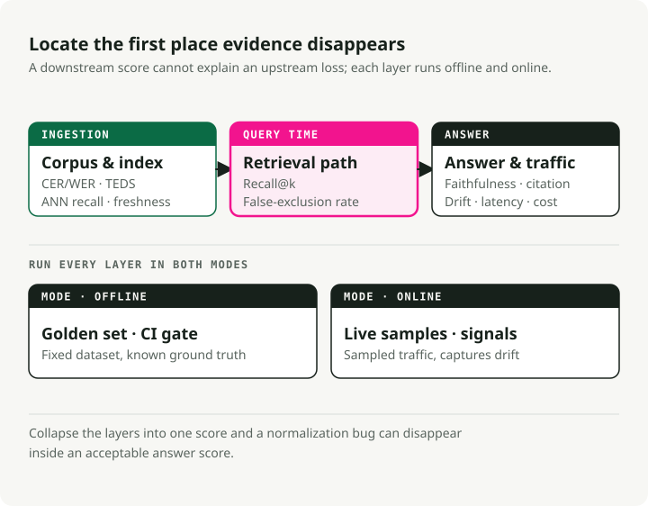
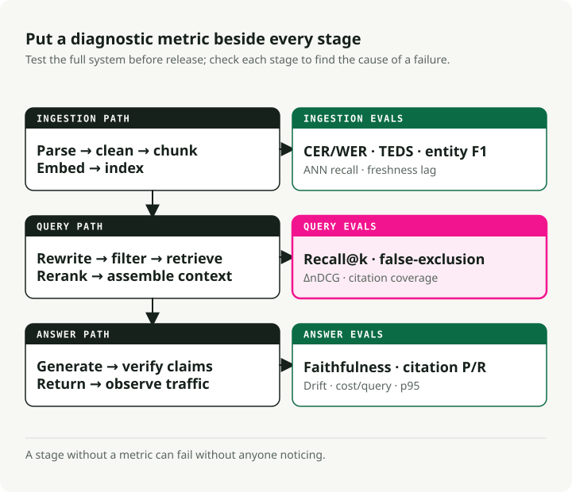
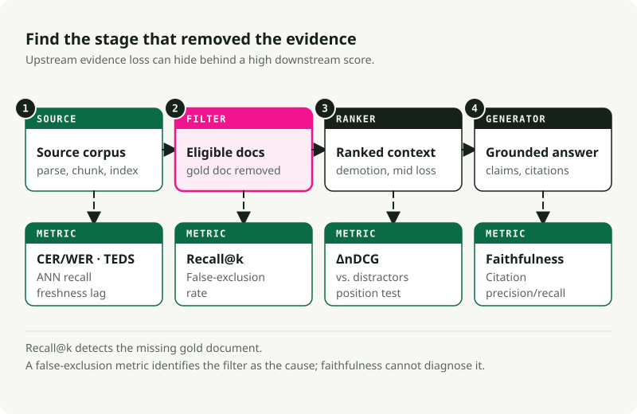

Evaluating RAG: Metrics for Every Stage of a Production RAG System
Part 1 of the Production RAG series
A RAG system with broken filters can run for months before anyone notices. The pipeline returns answers, the latency dashboards stay green, and the only sign something is wrong is that the answers themselves are subtly wrong. "Subtly wrong" doesn't page anyone.
Better logs won't catch this. Evaluation will, but only if it covers each stage of the pipeline with its own metric. This article is the reference I wish I'd had when I was figuring out which metrics actually matter.
Want to skip ahead and run code?
I packaged the metrics in this article into a runnable companion repo: slavadubrov/rag-evals-demo. make eval runs the full suite — retrieval metrics, hybrid + RRF, reranker uplift, filter false-exclusion, faithfulness, lost-in-the-middle, LLM-as-judge with bias mitigation, latency — on the SciFact corpus. make benchmark sweeps chunking × embedding × LLM and writes a markdown report. Notebooks 00–09 walk each metric individually; same vocabulary as this article, real numbers, no Docker (embedded Qdrant).
TL;DR
- Evaluation defines the system. A stage without a metric is a stage that fails silently.
- A useful evaluation stack covers ingestion, retrieval, generation grounding, ontology conformance, and system signals. RAGAS, TruLens, DeepEval, Arize Phoenix, and the TREC 2024 RAG Track give you tooling. They do not choose your metrics for you.
- For metadata- and ontology-grounded RAG, the most common failure is the silent filter. A wrong tag or a brittle hard predicate collapses recall to zero. Faithfulness can still look fine because the model faithfully said "I don't know."
The follow-ups go deep on individual sections. Use this one as the index.
Part 1 — Why Evaluation First
The senior signal
On a RAG project, the architecture diagram should not be the first artifact. The eval set should be.
You cannot choose between BM25 and dense retrieval, recursive and semantic chunking, or Cohere Rerank and BGE until you know what you are optimizing. "Better answers" is not a metric. "Faithfulness ≥ 0.85 on a 200-query golden set covering our top three intents, with p95 latency < 1.5s and filter false-exclusion rate < 2%" is a metric.
Define the harness before you write the retrieval code. The first harness will be wrong, and you will revise it. Revising a metric is much cheaper than revising a system you have already shipped.
Three layers, not one number
Modern RAG is a pipeline, so evaluation has to be a pipeline. No single number catches every failure mode.
Production evaluation has three layers: offline (was the knowledge base prepared correctly?), online (was the right evidence found and used for this query?), and post-generation (is the answer faithful and verifiable?). Each layer asks a different question. Collapse them into one score and you can miss basic failures, like a normalization bug that destroys recall.

The same split clarifies online vs. offline evaluation. Offline runs against a fixed dataset with known ground truth. It is reproducible, cheap to iterate, and the right place for component selection, A/B comparisons, and CI gates. Online runs against live traffic. It captures signals you cannot fake offline: regeneration rate, dwell time, thumbs, and real query drift. It is noisy and harder to instrument well.
You need both. Offline-only misses live drift. Online-only makes regressions hard to reproduce. Doing both is more work, but it is the only setup that gives you useful feedback before and after launch.
Component-level vs. end-to-end
There are two common mistakes. End-to-end-only evaluation tells you the system is broken, but not where. Component-only evaluation can show every part passing while the full system still fails. The fix is a few headline end-to-end metrics for go/no-go decisions, plus component metrics for diagnosis. Retrieval metrics catch retriever regressions. Generation metrics catch generator regressions. End-to-end answer correctness catches integration failures.
The reference frameworks (opinionated tour)
| Framework | Best at | Where it falls down |
|---|---|---|
| RAGAS | Reference-free RAG metrics (faithfulness, answer relevancy, context precision/recall); the de facto vocabulary | LLM-judge cost; opaque score components when debugging; English-centric defaults |
| ARES | Trained classifier judges per pipeline; fewer annotations than RAGAS-style approaches; high precision for close systems | Heavier setup; you have to actually train models |
| TruLens | Composable feedback functions with strong explainability; OpenTelemetry traces; production-friendly | Less batteries-included on RAG-specific metrics than RAGAS |
| DeepEval | Pytest-style unit tests for LLM outputs; G-Eval, custom metrics, CI/CD-native | Heavy LLM-judge usage = cost spikes |
| Arize Phoenix | Strong tracing and embedding visualization; spots embedding drift visually; OTEL-native | You bring your own metric definitions |
| TREC 2024 RAG Track | Public benchmark for nugget evaluation (AutoNuggetizer), support evaluation, and fluency on MS MARCO Segment v2.1 | Not a runtime tool; a benchmark to calibrate against |
My default stack is RAGAS for the metric vocabulary, DeepEval for CI gates, Phoenix for production tracing, plus custom code for ontology-specific metrics. You will outgrow whatever you start with. Pick the framework that makes custom metrics easy.
For benchmarks, use BEIR (Thakur et al., NeurIPS 2021) for zero-shot retrieval generalization, MTEB for general embedding quality, MIRACL for multilingual retrieval, and the TREC 2024 RAG Track for end-to-end RAG evaluation.
Part 2 — The Pipeline With Evaluation Points
A production RAG system is larger than "embed documents, retrieve chunks, call an LLM." Every stage between document acquisition and answer delivery can fail.

Each stage in the diagram has at least one metric. A stage with no metric can fail without anyone noticing.
The three lanes match where failures happen. The offline lane covers everything before a query exists: parsing, cleaning, chunking, embedding, indexing. The online lane covers everything after a query arrives: rewriting, retrieval, reranking, context assembly. The post-generation lane covers checks after the model writes an answer: faithfulness, citation verification, drift signals, and production telemetry.
Errors compound down the chain. Bad parsing limits chunking. Bad chunking limits retrieval. Bad retrieval limits reranking. Bad reranking limits generation. Faithfulness only measures the final answer, never the upstream cause.
Part 3 — Offline Ingestion Evaluation
Many production RAG failures start in ingestion. The system works on clean test documents, then fails on real PDFs, scans, tables, and messy corpus pages.
Document acquisition and parsing
What to measure:
- Text extraction completeness:
extracted_chars / expected_charson a labeled sample, computed per document class. There is no canonical package — write a small harness that compares parser output against a hand-cleaned reference. Watch for missing footnotes, headers, captions. -
OCR accuracy: CER (Character Error Rate) and WER (Word Error Rate), the standard speech/OCR metrics:
\[ \text{CER} = \frac{S + D + I}{N}, \qquad \text{WER} = \frac{S_w + D_w + I_w}{N_w} \]where \(S\), \(D\), \(I\) are character-level substitutions, deletions, insertions and \(N\) is the reference character count (subscript \(w\) for the word version). CER 1–2% is good for printed text; >10% is unusable. For handwritten or multilingual material, ≤20% may still be workable. Compute with
jiwer(jiwer.cer(refs, hyps),jiwer.wer(refs, hyps)) or HuggingFaceevaluate. For evaluation corpora, FUNSD and SROIE are the public benchmarks.from jiwer import cer, wer refs = ["Mars has two moons, Phobos and Deimos."] hyps = ["Mars has two m00ns, Phobos and Deirnos."] print(f"CER = {cer(refs, hyps):.3f}") # CER = 0.077 print(f"WER = {wer(refs, hyps):.3f}") # WER = 0.286 -
Table extraction fidelity: TEDS (Tree-Edit-Distance-based Similarity) measures how close a predicted HTML table tree is to the reference, normalized by the size of the larger tree. From Zhong et al., 2020 (PubTabNet):
\[ \text{TEDS}(T_a, T_b) = 1 - \frac{\text{EditDist}(T_a, T_b)}{\max(|T_a|, |T_b|)} \]TEDS uses both structure (rows, columns, spans) and cell content; TEDS-S strips the content and scores structure only. Reference implementation: PubTabNet's
teds.py(usesaptedunder the hood). For evaluation corpora, see PubTabNet, FinTabNet, and SciTSR. Naive parsers often fail on tables; benchmark before trusting them. -
Layout / structure preservation: heading order, list integrity, reading order on multi-column PDFs. Use DocLayNet for a labeled benchmark; for an off-the-shelf parser comparison,
unstructured,pymupdf, and a VLM parser likedoclingcover most of the design space.
My take: benchmark three parsers (a Tesseract baseline, a VLM-OCR model, and your vendor candidate) on a stratified sample of real document classes (clean scans, photos, table-heavy pages, multilingual, math, handwriting) at fixed DPI. Report CER/WER per class plus TEDS for table pages. Without that, you are guessing.
Cleaning and normalization
- Boilerplate removal accuracy: precision/recall against human-labeled boilerplate spans. Aggressive removal kills relevant content; lazy removal pollutes embeddings. Tools to compare:
trafilatura,jusText,Resiliparse. Barbaresi (2021) benchmarks these head-to-head. - Unicode normalization: percent of documents producing identical NFC and NFKC outputs (computed with the stdlib
unicodedata.normalize) is a useful drift signal. Mismatches are how zero-width joiners and lookalike characters destroy retrieval recall. - Language detection accuracy: F1 on a labeled multilingual sample. Critical for multilingual indexes. Use
fasttext-langdetect(Facebook'slid.176),lingua-py, orcld3; FLORES-200 is the standard benchmark for low-resource languages. -
Deduplication effectiveness (MinHash / LSH): precision/recall of your near-duplicate detector against a hand-labeled set. The underlying idea: estimate Jaccard similarity \(J(A, B) = \frac{|A \cap B|}{|A \cup B|}\) between document shingle sets via \(k\) random permutation hashes (Broder, 1997) and bucket near-duplicates with LSH banding (Indyk & Motwani, 1998). Standard MinHash with 128 hash functions and LSH banding tuned to a Jaccard threshold of 0.7–0.85 is the default; benchmark on your data because the right threshold is corpus-specific. Track false-merge rate (corrupts answers) separately from missed-merge rate (wastes index space).
datasketchis the canonical Python package:from datasketch import MinHash, MinHashLSH def shingles(text: str, k: int = 5) -> set[str]: text = text.lower() return {text[i:i + k] for i in range(len(text) - k + 1)} def to_minhash(text: str, num_perm: int = 128) -> MinHash: m = MinHash(num_perm=num_perm) for s in shingles(text): m.update(s.encode("utf-8")) return m docs = { "d1": "Mars has two moons, Phobos and Deimos.", "d2": "Mars has two moons, Phobos and Deimos!", # near-dup "d3": "Curiosity rover landed on Mars in 2012.", } lsh = MinHashLSH(threshold=0.8, num_perm=128) for did, text in docs.items(): lsh.insert(did, to_minhash(text)) print(lsh.query(to_minhash(docs["d1"]))) # ['d1', 'd2'] -
PII scrubbing: precision and recall, computed separately per entity type (emails, SSNs, names, addresses). Recall errors create compliance risk; precision errors hurt answer quality. Set the operating point with the legal team. Tools: Microsoft Presidio (the most complete),
scrubadub, or a fine-tuned NER model on a labeled set.
Chunking — the stage that quietly decides retrieval
Chunking is one of the highest-impact decisions in RAG. The wrong strategy can produce a multi-point recall gap with the same embeddings. NVIDIA's 2024 benchmarks gave page-level chunking the highest accuracy with the lowest variance for paginated documents; semantic chunking (cluster adjacent sentences by embedding similarity and cut on dissimilar boundaries — implemented in LangChain's SemanticChunker and LlamaIndex's SemanticSplitterNodeParser) can improve recall over fixed-window chunking; recursive character splitting (try paragraph breaks first, then sentence breaks, then word breaks, until each chunk fits the target size — see LangChain's RecursiveCharacterTextSplitter) at 400–512 tokens with 10–20% overlap remains a good default for general text.
Metrics to track:
- Chunk coherence: \(\text{coherence} = \overline{\cos(s_i, s_j)}_{\text{within}} - \overline{\cos(s_i, s_j)}_{\text{across boundary}}\), where \(s_i\) are sentence embeddings. Healthy chunks are internally similar and at-boundary dissimilar. Compute with
sentence-transformersplusscikit-learn'scosine_similarity. - Boundary quality: human-labeled "is this a sensible cut?" on a sample, plus a structural check that chunks don't split tables, lists, or numbered sections (your most common production bug).
- Optimal chunk size: sweep token sizes (128, 256, 512, 1024) and plot Recall@k vs. size on your golden set. Pick the knee. Don't pick whatever the tutorial said.
- Overlap effectiveness: ablate overlap fraction (0%, 10%, 20%, 30%) and measure Recall@k. Diminishing returns past ~20% in most corpora.
- Chunk attribution fidelity: percent of chunks that retain a verifiable source pointer (page number, section anchor, doc ID). Auditability requires this.
- Late vs. early chunking: late chunking (Günther et al., 2024) embeds the full document then segments, preserving global context (reference implementation in
jina-embeddings-v3). Contextual Retrieval (Anthropic, 2024) prepends LLM-generated context to each chunk. Both add cost. Benchmark on your corpus before adopting either one.
My opinion: structural chunking (splitting on headings, tables, and sections — implemented by parsers like unstructured.io or by walking the AST your parser already produced) is underused. If your documents have structure, use it before adding similarity heuristics. Recursive character splitting is the baseline; semantic chunking is worth the overhead mainly on unstructured prose.
Metadata extraction and enrichment
- NER precision/recall/F1: per entity type, on a labeled subset. Standard CoNLL/MUC-style. Compute with
seqeval(from seqeval.metrics import f1_score) for the BIO/IOB-tag-aware version, or scikit-learn for span-set comparisons. CoNLL-2003 and OntoNotes 5.0 are the canonical reference corpora. - Relation extraction F1: even more important for ontology-grounded systems. Hand-label 200 documents. TACRED and DocRED are the public benchmarks; for production code,
opennreandspaCyrelation pipelines are reasonable starting points. - Title / heading extraction accuracy: exact-match plus normalized Levenshtein similarity (\(1 - \frac{\text{edit\_dist}(a, b)}{\max(|a|, |b|)}\)) against ground truth —
python-Levenshteinorrapidfuzzgive you both in one call. - Hierarchical metadata preservation: percent of chunks that correctly retain their parent section, parent document, and ancestry path. This is the metric that decides whether your RAG can answer "what does the child of policy X say?" type questions.
Embedding generation
- Model selection benchmarks: MTEB for general capability (nDCG@10 is the headline; the MTEB Python package lets you reproduce the leaderboard locally), BEIR for zero-shot generalization, MIRACL for multilingual. Top retrieval models cluster in a narrow nDCG@10 band, but English MTEB scores poorly predict performance on lower-resource languages.
- Domain-specific evaluation: do not trust general benchmarks for domain corpora. Build a domain golden set of 200–500 query/doc pairs and re-rank candidate models on it with
ranxorpytrec_eval. I have repeatedly seen a model that's #5 on MTEB beat a model that's #1 by 15+ points on a specific domain. - Embedding drift detection: track distributional KL or model-based drift between a fixed reference window and rolling production embeddings; nearest-neighbor stability for a fixed probe set is the simplest practical signal.
evidentlyandalibi-detectboth implement model-based and statistical drift detectors. Evidently's comparative study favors model-based drift detection as the default. - Multi-vector vs. single-vector: late-interaction (ColBERT / ColBERTv2 — see Khattab & Zaharia, 2020; reference implementations in RAGatouille and PyLate) typically wins out-of-domain at 6–10× the storage cost (with PLAID-style compression; uncompressed is much larger). Worth it when your corpus is far from the embedding model's training distribution. Otherwise, stick with single-vector.
Index construction
- Recall@k under approximation: compare the approximate-nearest-neighbour (ANN) index against an exact brute-force baseline at the same k — in FAISS, that's
IndexHNSWFlat(orIndexIVFFlat) vs.IndexFlatIP/IndexFlatL2. Aim for ≥95% recall@10 vs. flat. Theann-benchmarksproject tracks recall–QPS Pareto curves across libraries. - HNSW tuning: HNSW (Hierarchical Navigable Small World — a layered proximity graph; see Malkov & Yashunin, 2018, implemented in
hnswlib, FAISS'sIndexHNSWFlat, and most vector DBs) exposes three knobs:M(graph fan-out),efConstruction(build-time candidate width),efSearch(query-time candidate width). Pragmatic defaults: M=16–32, efConstruction=150, efSearch starting at 100 and tuned upward until recall plateaus. A 10M-vector dataset with efSearch=500 might hit 98% recall at 5ms; efSearch=100 drops to 85% at 1ms. Pick the recall point your evaluation set demands. - IVF tuning: IVF (Inverted File index — partition vectors with k-means into
nlistcells, then at query time scan thenprobenearest cells; see FAISS'sIndexIVFFlatandIndexIVFPQ). Usenlist≈ √N as a starting heuristic and tunenprobeat runtime. IVF generally handles filtered search more efficiently than HNSW, which matters for ontology-grounded systems with lots of metadata predicates. - Update freshness lag: time from doc commit to retrievability. Track p50 and p99. For systems with regulatory requirements, also track the percent of queries served against stale indexes.
Part 4 — Online Inference Evaluation
The online lane is where most production metrics live. Many teams stop at Recall@k. That is not enough.
Query understanding and rewriting
- Query expansion quality: Recall@k uplift on your golden set, expanded query vs. raw. If it's not at least +5% on hard queries, your expander is hurting more than helping. Classical PRF (pseudo-relevance feedback) baselines like RM3 and Bo1 are still useful sanity checks; LLM-based expansion needs to beat them.
- HyDE evaluation: HyDE (Gao et al., 2022) generates a hypothetical answer with the LLM, embeds it, and retrieves against that — a useful tool that adds latency and a hallucination surface. Evaluate by Recall@10 uplift on out-of-domain queries (where it shines) and confirm there is no degradation on in-domain queries (where it can hurt). Use as a fallback when retrieval confidence is low, not as a default. Anchor with a cross-encoder reranker downstream to validate hypothetical-driven retrievals.
- Multi-query generation: Recall@k union of N rewrites vs. single query. Diminishing returns past 3–4 rewrites. Implementations: LangChain's
MultiQueryRetriever, LlamaIndex'sQueryFusionRetriever. - Intent classification accuracy: standard precision/recall/F1 per intent (compute with
sklearn.metrics.classification_report), but the operative metric is routing correctness — does the right downstream pipeline get invoked? - Adaptive routing: Adaptive-RAG (Jeong et al., NAACL 2024) makes the case that not every query deserves the same retrieval strategy. Track router accuracy as a classification problem against a labeled set of "needs no retrieval / one-shot / iterative."
Retrieval metrics
These are the baseline metrics. If you do not track them, you cannot tell whether retrieval is improving.
| Metric | What it measures | When to use |
|---|---|---|
| Recall@k | percent of queries where any relevant doc is in top k | the most important retrieval metric for RAG; if it's low, nothing downstream matters |
| Precision@k | percent of top-k that are relevant | useful when context window is the bottleneck |
| MRR | average of 1/rank of the first relevant doc | when users only look at the top-1 or top-3 |
| nDCG@k | position-discounted gain weighted by relevance grades | the retrieval gold standard; handles graded relevance |
| MAP | mean over queries of average precision | when you care about the entire ranked list |
| Hit Rate@k | binary version of Recall@k | quick sanity metric |
| Coverage | percent of golden docs ever retrieved across all queries | catches systematic gaps in the index |
The formulas, for reference (binary relevance with relevant set \(R_q\) for query \(q\), and \(\text{rel}_i = 1\) if the \(i\)-th retrieved doc is in \(R_q\)):
For graded relevance, \(\text{rel}_i \in \{0, 1, 2, \dots\}\); binary nDCG is the special case used in the code below. MAP is the mean over queries of \(\text{AP}_q = \frac{1}{|R_q|}\sum_{i: \text{rel}_i = 1} \text{Precision@}i\). See Manning, Raghavan, Schütze, Introduction to Information Retrieval, chapter 8 for derivations.
For production code, use ranx, pytrec_eval, or ir_measures — they implement the entire TREC metric family and handle graded relevance correctly. Reasonable starting targets: Recall@10 ≥ 0.85, MRR ≥ 0.6, nDCG@10 ≥ 0.7. They should be set against a realistic golden set, not pulled from a tutorial.
The test harness for these is short. You can run it from a notebook before you've even chosen a vector database.
from math import log2
from statistics import mean
# synthetic gold set: query_id -> set of relevant doc ids
gold = {
"q1": {"d3"},
"q2": {"d7", "d2"},
"q3": {"d11"},
"q4": {"d5"},
}
# ranked retrieval results: query_id -> ranked list of doc ids (top-10)
runs = {
"q1": ["d8", "d3", "d1", "d4", "d2", "d9", "d6", "d10", "d12", "d13"],
"q2": ["d2", "d6", "d4", "d7", "d1", "d3", "d8", "d11", "d5", "d9"],
"q3": ["d11", "d2", "d3", "d4", "d1", "d6", "d7", "d8", "d10", "d12"],
"q4": ["d1", "d2", "d3", "d6", "d8", "d9", "d10", "d12", "d13", "d14"],
}
def recall_at_k(ranked, gold_set, k):
if not gold_set:
return 0.0
hit = sum(1 for d in ranked[:k] if d in gold_set)
return hit / len(gold_set)
def reciprocal_rank(ranked, gold_set):
# MRR contribution per query: 1/rank of the first relevant doc.
for rank, d in enumerate(ranked, start=1):
if d in gold_set:
return 1.0 / rank
return 0.0
def ndcg_at_k(ranked, gold_set, k):
# binary relevance: rel ∈ {0, 1}
gains = [1.0 if d in gold_set else 0.0 for d in ranked[:k]]
dcg = sum(g / log2(i + 2) for i, g in enumerate(gains))
# ideal DCG: all gold docs ranked first, capped by k
n_gold_in_topk = min(k, len(gold_set))
idcg = sum(1.0 / log2(i + 2) for i in range(n_gold_in_topk))
return dcg / idcg if idcg else 0.0
K = 5
print(f"Recall@{K}: {mean(recall_at_k(runs[q], gold[q], K) for q in gold):.3f}")
print(f"MRR: {mean(reciprocal_rank(runs[q], gold[q]) for q in gold):.3f}")
print(f"nDCG@{K}: {mean(ndcg_at_k(runs[q], gold[q], K) for q in gold):.3f}")
# Recall@5: 0.750
# MRR: 0.625
# nDCG@5: 0.627
That is your retrieval CI gate. Wire it to a 200-query golden set and run it on every PR. If one of the three numbers regresses, block the merge and fix the regression.
The companion repo pins the exact numbers above (Recall@5 = 0.750, MRR = 0.625, nDCG@5 = 0.627) as a unit test in tests/test_retrieval_metrics.py; notebook 01 sweeps Recall@k / MRR / nDCG over a real SciFact index, and the production-shaped harness lives in evaluation/retrieval.py.
Hybrid retrieval and reciprocal rank fusion
BM25 (the classic sparse lexical scorer from Robertson & Walker, 1994 — exact-term matching with TF-IDF-style weighting and length normalization, available in rank_bm25, Elasticsearch/OpenSearch, and most search engines) plus dense fusion via Reciprocal Rank Fusion (Cormack, Clarke, Buettcher, SIGIR 2009) with k=60 is a strong default. RRF is score-agnostic, so it sidesteps the score-normalization problems that come with linear interpolation. If you have 50+ labeled query pairs, try convex combination and tune α. Hybrid plus a cross-encoder reranker usually beats dense-only or sparse-only retrieval on technical, log-style, and code corpora. On heavily semantic corpora, the gain can be small. Measure on your data; a bad fusion config can underperform dense-only.
The implementation fits in a few lines.
from collections import defaultdict
# two retrieval lanes: dense embeddings and BM25.
dense = ["d3", "d7", "d1", "d4", "d2", "d9", "d10"]
sparse = ["d2", "d3", "d8", "d1", "d11", "d4", "d6"]
def rrf(rankings: list[list[str]], k: int = 60) -> list[tuple[str, float]]:
"""Reciprocal Rank Fusion (Cormack et al., SIGIR 2009).
score(d) = sum over rankings of 1 / (k + rank(d))
Score-agnostic: only rank position matters. k=60 is the canonical default.
"""
scores: dict[str, float] = defaultdict(float)
for ranking in rankings:
for rank, doc in enumerate(ranking, start=1):
scores[doc] += 1.0 / (k + rank)
return sorted(scores.items(), key=lambda kv: kv[1], reverse=True)
fused = rrf([dense, sparse], k=60)
for doc, score in fused[:5]:
print(f"{doc} score={score:.5f}")
# d3 score=0.03252 <- rank 1 dense, rank 2 sparse
# d2 score=0.03178 <- rank 5 dense, rank 1 sparse
# d1 score=0.03150
Note what RRF doesn't do: it never looks at the raw similarity scores. A dense retriever returning cosine 0.98 and a BM25 lane returning score 17.4 are not directly comparable. If you normalize them with z-scores or min-max scaling, you can end up favoring the lane with the highest variance in that batch.
RRF uses rank only. If a retriever puts a document at position 2, that vote is worth 1 / (60 + 2), regardless of the raw score that produced it.
Hybrid + RRF on SciFact: notebook 02 compares dense vs BM25 vs RRF with per-query deltas. The production-shaped fuser is in retrieval/hybrid_rrf.py; tests/test_rrf.py pins the canonical d3 / d2 / d1 ordering at k=60.
Reranking
- ΔnDCG / ΔMRR: the only honest reranker metric — uplift over no-rerank, on your golden set, at the depth your application actually uses. Compute by running your retrieval metrics with and without the reranker on identical candidate sets.
- Cross-encoder vs. bi-encoder: a bi-encoder embeds query and doc independently (one vector per side) and scores by dot product; a cross-encoder concatenates query+doc and runs a single forward pass that attends jointly across both. Cross-encoders almost always win on relevance, at the cost of a forward pass per candidate. Reference implementation:
sentence-transformersCrossEncoder. In published benchmarks BGE-reranker-v2-m3 hits ~80ms per 100 candidates on GPU and ~350ms on CPU, and matches Cohere Rerank on quality at zero ongoing cost. Treat the numbers as orders of magnitude — your hardware and batch size will move them. - Listwise vs. pointwise: pointwise scores each (query, doc) pair independently; listwise scores the whole candidate list jointly so the model can directly optimize a ranking objective. Listwise (BGE, ZeRank-2 with calibrated outputs) generally wins on nDCG; pointwise is easier to threshold. ZeRank-2's calibrated probabilities let you use simple
score > 0.7thresholds; raw BGE/MiniLM scores need per-corpus tuning.
from sentence_transformers import CrossEncoder
reranker = CrossEncoder("BAAI/bge-reranker-v2-m3")
query = "How do I rotate database credentials in production?"
candidates = [
"Production database credentials are rotated via Vault every 30 days.",
"The new logo was unveiled at the all-hands meeting.",
"To rotate prod DB creds, run the `rotate-secrets` GitHub Action.",
]
scores = reranker.predict([(query, c) for c in candidates])
ranked = sorted(zip(candidates, scores), key=lambda x: -x[1])
for doc, score in ranked:
print(f"{score:+.3f} {doc}")
A reranker is often the most valuable addition to a basic RAG pipeline. On most corpora I've seen, adding one moves Precision@1 by 15–40%. If your RAG does not have one, add it before spending time on smaller retrieval tweaks.
ΔnDCG and ΔPrecision@1 from a cross-encoder on SciFact: notebook 03; module: retrieval/reranker.py.
Context construction and lost-in-the-middle
This is where many "good retrieval, bad answer" failures come from.
- Context relevance: per-chunk relevance score from RAGAS
ContextRelevancyor a cross-encoder, aggregated as mean and as percent of chunks below a threshold. - Context utilization: of the chunks placed in context, how many were actually cited or used in the answer. Compute as \(\frac{|\text{cited chunks}|}{|\text{retrieved chunks}|}\) over a labeled sample. Low utilization (< 30%) means you're paying for tokens you don't need.
- Lost-in-the-middle detection: synthetic eval where you place the gold chunk at positions {first, middle, last} of a long context and measure answer correctness. The U-shaped degradation is real and documented in Liu et al. (TACL 2023). Modern models do better than 2023-era models, but the bias persists. Mitigations: rerank then reorder the top-k so the highest-scored chunk is first or last (LangChain's
LongContextReorderdoes exactly this), or compress middle chunks aggressively. Measure with a position-stratified eval, not just an aggregate score. A worked, runnable position-stratified eval lives in notebook 06 (module:evaluation/lost_in_middle.py). - Context compression: report compression ratio (input tokens / output tokens) alongside answer correctness. Tools: LangChain's
ContextualCompressionRetriever, LongLLMLingua. If compression drops correctness by more than 2 points, you've gone too far.
Part 5 — The Filter False-Exclusion Rate
This metric gets its own section because most teams skip it, and it causes real production failures.
A hard metadata filter like tenant_id = X AND product = Y AND locale = en-US can drop effective recall to zero without changing the standard retrieval metrics. The gold doc is excluded before ranking starts. Recall@k is computed over the surviving candidate set, so it can look fine. Faithfulness is computed against the retrieved context, so it can also look fine; the model faithfully said "I don't know."
The red branch in the tree is the common failure: the right document exists, but the filter removes it before retrieval.

The metric
filter_false_exclusion_rate =
(# queries where gold doc was excluded by metadata filter) /
(# queries with at least one gold doc)
To compute it, you need (a) ground-truth doc IDs for each eval query and (b) instrumentation that logs the filter predicates applied, not just the final results. A reasonable target is < 2% on production traffic. If the rate is higher, your filter logic is destroying recall.
Here's a working implementation that also illustrates why the failure is invisible to a naively written retrieval harness.
# A small worked example that drops recall to zero silently.
docs = [
{"id": "d1", "tenant": "acme", "locale": "en-US"},
{"id": "d2", "tenant": "acme", "locale": "en-GB"},
{"id": "d3", "tenant": "globex", "locale": "en-US"},
{"id": "d4", "tenant": "acme", "locale": "en-US"},
{"id": "d5", "tenant": "acme", "locale": "de-DE"},
]
queries = [
# the gold doc lives in en-GB but the dynamic filter forced en-US
{"qid": "q1", "gold": {"d2"}, "filter": lambda d: d["locale"] == "en-US"},
# the gold doc is correctly within the tenant filter
{"qid": "q2", "gold": {"d4"}, "filter": lambda d: d["tenant"] == "acme"},
# the gold doc is in a different tenant — silently dropped
{"qid": "q3", "gold": {"d3"}, "filter": lambda d: d["tenant"] == "acme"},
# the gold doc passes the filter (de-DE locale match)
{"qid": "q4", "gold": {"d5"}, "filter": lambda d: d["locale"] == "de-DE"},
]
def filter_false_exclusion_rate(queries, docs):
n_with_gold, n_excluded = 0, 0
for q in queries:
if not q["gold"]:
continue
n_with_gold += 1
survivors = {d["id"] for d in docs if q["filter"](d)}
if not (q["gold"] & survivors):
n_excluded += 1
return n_excluded / n_with_gold if n_with_gold else 0.0
rate = filter_false_exclusion_rate(queries, docs)
print(f"filter_false_exclusion_rate = {rate:.2%}")
# filter_false_exclusion_rate = 50.00%
# The trap: a recall harness that only iterates over the SURVIVORS will
# either skip the empty-gold queries or report perfect recall on a doomed set.
def naive_recall_over_survivors(queries, docs, k=10):
recalls = []
for q in queries:
survivors = [d for d in docs if q["filter"](d)][:k]
survivor_ids = {d["id"] for d in survivors}
denom = len(q["gold"] & {d["id"] for d in docs})
if denom == 0:
continue # silently drops the query
visible_gold = q["gold"] & survivor_ids
recalls.append(len(visible_gold) / denom)
return sum(recalls) / len(recalls) if recalls else 0.0
print(f"naive recall (filtered universe) = {naive_recall_over_survivors(queries, docs):.2%}")
# naive recall (filtered universe) = 50.00%
assert rate == 0.5
Half the queries lose their gold doc to the filter. The naive recall harness reports 50% and you blame the retriever. The exclusion rate shows the real problem: this is a predicate bug. Two queries had their answer removed before the retriever ran. No model can recover a document that was filtered out.
The 50% rate above is reproduced as a unit test in the companion repo: tests/test_filter_exclusion.py::test_50_percent_exclusion_rate. Notebook 04 runs it on SciFact with synthetic metadata so you can watch a real filter zero out recall; the runtime metric (with predicate-precision/recall companion) is in evaluation/filter_exclusion.py.
Companion metric: predicate precision and recall
When filtering is dynamic (for example, an LLM extracts filter predicates from the query), treat the predicate extractor as a classification model and evaluate it as one. Predicate precision/recall against a labeled set of (query, correct predicate) pairs. If your extractor is wrong 8% of the time and applies hard filters, you have a hard ceiling on recall around 92%, and no amount of reranking helps.
Soft boost vs. hard filter
This metric forces a design decision. Use hard filters when correctness is binary: legal jurisdiction, ACL boundaries, published-versus-draft. Use soft boosts when relevance is graded: locale preference, recency, version. Without exclusion-rate measurement, the wrong choice is hard to see.
The decision rule, measurable:
For each filter predicate F:
hard_recall_F = retrieval_recall@k with F as a hard filter
soft_recall_F = retrieval_recall@k with F as a +0.X rerank boost
hard_precision = relevant_in_top_k / k under hard filter
soft_precision = relevant_in_top_k / k under soft boost
exclusion_rate = % of queries where the gold doc was filtered out (hard)
Use hard filter only if exclusion_rate < ε AND hard_precision >> soft_precision.
Otherwise prefer soft boost.
ε in the 1–2% range is reasonable; lower for high-stakes domains. A dedicated post in this series goes deeper on this trade-off.
Part 6 — Generation Evaluation
Retrieval metrics tell you the system could answer correctly. They do not tell you it did. Generation metrics cover that gap.
Faithfulness and groundedness
RAGAS faithfulness decomposes the answer into atomic claims (short, self-contained factual statements), then verifies each against the retrieved context via an LLM judge:
The percent of supported claims is the score. The structure is more useful than any single number, because it tells you which claims are unsupported. Production code lives in the ragas package — usage looks like:
from datasets import Dataset
from ragas import evaluate
from ragas.metrics import faithfulness, answer_relevancy, context_precision
samples = Dataset.from_dict({
"question": ["How many moons does Mars have?"],
"answer": ["Mars has two moons, Phobos and Deimos."],
"contexts": [["Mars has two moons named Phobos and Deimos."]],
"ground_truth": ["Mars has two moons."],
})
result = evaluate(samples, metrics=[faithfulness, answer_relevancy, context_precision])
print(result)
Below is the same loop unrolled with a deterministic stand-in judge so you can see the shape end-to-end.
def extract_claims(answer: str) -> list[str]:
# Production: an LLM call that decomposes the answer.
# Demo: split on sentence-final punctuation.
return [c.strip() for c in answer.replace("?", ".").replace("!", ".").split(".") if c.strip()]
def verify_claim(claim: str, context: str) -> bool:
# Production: an NLI (natural-language inference) model or LLM judge.
# Demo: a deterministic stand-in so the example runs offline.
entailed_pairs = {
"Mars has two moons": True,
"Phobos and Deimos orbit Mars": True,
"Mars has a thick atmosphere": False, # unsupported by context
"Curiosity landed in 2012": True,
}
for k, v in entailed_pairs.items():
if k.lower() in claim.lower() or claim.lower() in k.lower():
return v
words = [w.lower() for w in claim.split() if len(w) > 3]
return all(w in context.lower() for w in words) if words else False
context = (
"Mars has two moons, Phobos and Deimos. NASA's Curiosity rover "
"landed on Mars in 2012."
)
answer = (
"Mars has two moons. Phobos and Deimos orbit Mars. "
"Mars has a thick atmosphere. Curiosity landed in 2012."
)
claims = extract_claims(answer)
verdicts = [(c, verify_claim(c, context)) for c in claims]
faithfulness = sum(1 for _, ok in verdicts if ok) / len(verdicts)
for c, ok in verdicts:
print(f" [{'✓' if ok else '✗'}] {c}")
print(f"faithfulness = {faithfulness:.2f}")
# faithfulness = 0.75 (one unsupported claim about the atmosphere)
The structure matters. In production, verify_claim becomes an NLI model or an LLM call. The rest of the harness stays the same: extract, verify, aggregate.
End-to-end claim extraction + verification on generated SciFact answers: notebook 05; module: evaluation/faithfulness.py. The repo also runs an HHEM-style cross-family verifier in the same loop so you can see which judge family agrees with which.
A purpose-built alternative to LLM-as-judge is HHEM-2.1-Open (Hughes Hallucination Evaluation Model, Vectara), a 600 MB classifier fine-tuned for hallucination detection. The default threshold is usually 0.5 (>0.5 = factual, ≤0.5 = hallucinated), but calibrate on your own labeled set. It runs on CPU and reportedly outperforms generic LLM judges on AggreFact and RAGTruth. The newer commercial HHEM-2.3 and FaithJudge sit on the current Pareto frontier on Vectara's leaderboard. Re-benchmark before committing; leaderboards drift.
Atomic-fact evaluation
FActScore (Min et al., EMNLP 2023) decomposes long-form generations into atomic facts, retrieves evidence per fact, labels each supported / not-supported, and reports the supported fraction:
Reference implementation: shmsw25/FActScore. It works well for biographies, summaries, and other long-form outputs. Watch out: repetitive trivial facts can inflate the score, and "MontageLie" attacks (true facts in deceptive order) can defeat it. VeriScore handles claims with necessary modifiers; the Core filter helps prevent fact-padding.
Citation accuracy
Track citation precision (cited spans actually support the claim) and citation recall (claims that should be cited, are):
The TREC 2024 RAG Track's support evaluation is the academic standard. Upadhyay et al. (SIGIR 2025) report GPT-4o agreeing with human judges 56% of the time on manual assessment from scratch, rising to 72% with post-editing of LLM predictions. That is useful as a force multiplier, not as a replacement for human assessment in high-stakes contexts. For an automated approximation, ALCE (Gao et al., EMNLP 2023) implements citation precision/recall with NLI-based verification.
Answer correctness, completeness, refusal
- Answer correctness vs. ground truth: when you have it, exact match or token-F1 for short-answer tasks (
evaluate.load("squad")), semantic similarity for open-ended (bert-score, embedding cosine viasentence-transformers, or RAGASAnswerCorrectness). - Completeness via nuggets: a "nugget" is a single atomic piece of information that any correct answer must contain (e.g., for "When was the company founded?" the nuggets might be
{year: 1994, founder: Jane Doe}). TREC's AutoNuggetizer extracts the gold nuggets of a correct answer from a reference, then scores what fraction the system covers — strong correlation with manual evaluation across 21 topics × 45 runs at TREC 2024. - Refusal behavior: queries with no answer in the corpus should produce abstention, not hallucination. Track abstention precision (refusals that were correct) and abstention recall (out-of-scope queries that triggered refusal). NoMIRACL is the public benchmark; in your own domain, label a slice of out-of-scope queries and track abstention accuracy.
Post-generation verification
The cheapest reliability gains often come from deterministic post-checks, not larger models.
- Entity grounding check: every named entity in the answer must appear in (or be derivable from) the retrieved context. A simple regex + exact-match check (or
spaCy'sentsagainst a normalized context string) catches a surprising fraction of hallucinations. - Claim verification: extract claims, run NLI against context, fail or flag any below threshold. NLI-as-faithfulness models:
cross-encoder/nli-deberta-v3-large,MoritzLaurer/DeBERTa-v3-large-mnli-fever-anli-ling-wanli. Adds latency. Worth it for high-stakes domains. - Self-consistency (Wang et al., ICLR 2023): sample N=5 generations at temperature > 0; report agreement rate (e.g., proportion of generations that match the modal answer, or pairwise BERTScore); flag low-agreement answers for human review.
- Confidence calibration: collect verbalized confidence ("How confident are you, 0–1?") and compare to actual correctness on the eval set. Plot a calibration curve and report Expected Calibration Error: \(\text{ECE} = \sum_{m=1}^{M} \frac{|B_m|}{n} |\text{acc}(B_m) - \text{conf}(B_m)|\), where \(B_m\) are confidence bins. Implementations:
netcal,torchmetrics.CalibrationError. A model that says 0.9 should be right 90% of the time. They almost never are.
Part 7 — Ontology-Grounded RAG Evaluation
The standard metrics above cover open-corpus RAG. Ontology-grounded systems need more. If your RAG retrieves against a structured ontology, taxonomy, or knowledge graph (products in a catalog, conditions in SNOMED, components in a BOM, security techniques in MITRE ATT&CK), standard RAG metrics are necessary but not sufficient. You also need to measure the ontology layer.
Entity linking accuracy
The first task is mapping a query mention to an ontology entity ("Aspirin" → wikidata:Q18216, "the 737" → aircraft:Boeing_737).
- Mention-level precision/recall/F1: standard, against gold mention spans (compute with
seqevalor a span-set comparator). - Disambiguation accuracy: of correctly-detected mentions, what fraction map to the right entity ID? Public references include ReFinED, REL, and GENRE; benchmarks like AIDA-CoNLL and BELB report end-to-end F1 in the 60–90% range depending on system and domain.
- NIL handling: precision/recall on "entity not in ontology." This is where most production EL systems quietly fail. They over-link to a near-but-wrong entity rather than abstaining.
Hierarchy-aware evaluation
Plain accuracy treats "predicted Sedan when truth is Hatchback" the same as "predicted Sedan when truth is Submarine." Those errors are not equal.
-
Hierarchical precision/recall/F1 (Kosmopoulos et al., 2015): credit ancestors and descendants in the ontology DAG. With \(\hat{P}_q\) the predicted node plus all its ancestors and \(T_q\) the true node plus all its ancestors:
\[ hP = \frac{\sum_q |\hat{P}_q \cap T_q|}{\sum_q |\hat{P}_q|}, \quad hR = \frac{\sum_q |\hat{P}_q \cap T_q|}{\sum_q |T_q|}, \quad hF1 = \frac{2 \cdot hP \cdot hR}{hP + hR} \]Implementable in ~30 lines with
networkxon the ontology graph; seehierarchical-classifier-metricsfor a reference. -
Wu-Palmer similarity between predicted and gold entity in the taxonomy (Wu & Palmer, 1994):
\[ \text{WuP}(c_1, c_2) = \frac{2 \cdot \text{depth}(\text{LCA}(c_1, c_2))}{\text{depth}(c_1) + \text{depth}(c_2)} \]where LCA is the lowest common ancestor in the taxonomy. Available out of the box in NLTK for WordNet (
from nltk.corpus import wordnet as wn; wn.synset("car.n.01").wup_similarity(wn.synset("truck.n.01"))); for custom taxonomies, compute LCA withnetworkx. -
Sibling/parent confusion rate: separately track confusions to siblings, parents, and children —
count_sibling / total_errors,count_parent / total_errors,count_descendant / total_errors. Sibling confusions usually mean ambiguous mentions; parent confusions mean the model is hedging up the hierarchy.
Filter false-exclusion rate (reprise, now critical)
In ontology-grounded systems, hard filters often come from the ontology itself ("only retrieve docs tagged with category X"). The exclusion-rate metric (defined in Part 5) becomes a primary correctness signal. A wrong category prediction can silently zero out recall.
Constrained generation conformance
When your output must conform to an ontology (every entity name in the answer must be a valid ontology member; every predicate must come from a closed vocabulary), measure:
- Schema validity rate: percent of outputs that parse and validate against the ontology schema. Validate with
jsonschemaorpydantic. JSONSchemaBench is the public benchmark for general structured output; for ontology-specific schemas, build your own validator. - Vocabulary conformance: percent of named entities in the output that are valid ontology IDs — a one-line set-membership check against the closed vocabulary.
- Semantic conformance: validity is necessary but insufficient. A syntactically valid output can pick the wrong-but-valid entity. Pair conformance with downstream answer correctness.
Constrained decoding frameworks (Outlines, XGrammar, Guidance, OpenAI Structured Outputs) can get you to ~100% schema validity at modest latency cost. Per JSONSchemaBench, Guidance currently leads on the efficiency × coverage × quality Pareto front.
Auditability
For ontology-grounded systems where answers face review:
- Citation completeness: percent of factual claims with at least one verifiable citation.
- Provenance depth: percent of citations that resolve all the way back to a source document with a stable ID, not just a chunk hash.
- Reproducibility rate: re-running the same query at a fixed snapshot returns the same answer (modulo temperature). If this isn't ~100% on temp=0, you have non-determinism elsewhere in the pipeline.
Part 8 — System-Level Evaluation
Holistic answer quality
- LLM-as-judge (Zheng et al., NeurIPS 2023): the dominant approach. G-Eval (an LLM-judge protocol that has the model generate its own chain-of-thought rubric before scoring) auto-generates the rubric from a natural-language criterion, then scores with log-prob-weighted output. Strong human alignment with GPT-4-class judges.
- Pairwise preference: present judge with answer A vs. answer B; record preference. Avoids absolute-score calibration issues. Roughly 80% human-judge agreement at the GPT-4 tier, which matches human-human agreement.
LLM-as-judge has real biases:
- Position bias: judges prefer the first or second answer regardless of quality. Mitigation: randomize order, or run both orders and average.
- Verbosity bias: judges prefer longer answers. The 2025–2026 research is more nuanced. Modern instruction-tuned judges penalize filler on length-controlled tests but reward genuine completeness on truncation pairs. Even so, tell the judge explicitly how to treat length, and consider length-controlled win rates.
- Self-preference bias: GPT-4 prefers GPT-4 outputs; the bias correlates with output perplexity (judges prefer text that's familiar to them). Mitigation: use a different judge family from the system being evaluated. Do not use a model to judge itself.
Practical recipe: GPT-4o or Claude as judge, randomized order, masked model identities, explicit length policy in the rubric, and multiple runs averaged. For high-stakes evals, use two judges and analyze disagreements.
Schema-Guided Reasoning for judges
Free-form judge output is the main reason judge runs are hard to reproduce. Two runs against the same answer can give different scores not because the judge changed its mind, but because it organized its reasoning differently. The fix is to force the judge into a structured rubric — what I've been calling Schema-Guided Reasoning (SGR): define the reasoning steps as a Pydantic schema, run with constrained decoding (Outlines, XGrammar, vLLM's structured outputs, OpenAI's response_format), and the judge has to emit each field in order. No skipped steps, no hidden bias toward longer answers.
For RAG eval the schema decomposes the judgment into explicit, auditable fields rather than letting the model jump straight to a number:
from pydantic import BaseModel, Field
from typing import Literal
class FaithfulnessJudgment(BaseModel):
extracted_claims: list[str] = Field(
description="Atomic factual claims in the answer, one per item."
)
supported_claims: list[str] = Field(
description="Subset of extracted_claims that are entailed by the context."
)
unsupported_claims: list[str] = Field(
description="Subset that is NOT entailed by the context."
)
failure_mode: Literal[
"none", "fabrication", "overgeneralization", "wrong_entity", "stale_fact"
]
score: float = Field(ge=0.0, le=1.0)
rationale: str
Three things change once the judge is constrained to this shape. The score is recoverable from the structured fields (len(supported) / len(extracted)), so position bias and verbosity bias have less room to operate. Disagreements between two judges become diagnosable — you can see exactly which claim each judge flagged. And because the rubric is the schema, you can version it like code: a change to the rubric is a Pydantic diff, not a prompt rewrite.
This works for any rubric-based judge, not just faithfulness. Pairwise preference, citation support, and refusal correctness all benefit from the same treatment.
A G-Eval / pairwise / position-bias / cross-family judge harness lives in notebook 07; module: evaluation/llm_judge.py. The benchmark sweep (make benchmark in the repo) wires three frontier-tier models — gpt-5-mini, claude-haiku-4-5, gemini-2.5-flash — into a rotating-judge pairwise A/B so every model judges the other two, surfacing self-preference numerically.
Latency and cost
- p50, p95, p99 at every pipeline stage. p95 is the right SLO (service level objective) target for most applications; p99 is what you alert on.
- Time-to-first-token vs. total generation time. Users care about TTFT for streaming UX.
- Stage breakdown: retrieval, reranking, generation, post-processing. The biggest p95 spikes are almost always rerankers running on CPU.
- Total $/query = embedding + retrieval + rerank + generation + storage amortized. Track p50 and p99; the long tail is where the budget goes.
- Cache hit rates at the embedding cache, retrieval cache, and KV-cache levels. A 30%+ cache hit rate is usually achievable for repeated workloads and is the cheapest single cost optimization.
Per-stage p50/p95/p99 with a stage breakdown is built into notebook 08 and the runner at evaluation/latency.py; the benchmark report combines latency with faithfulness in a single matrix you can re-run with make benchmark.
A/B testing
- Unit of randomization: per-user or per-session, never per-query (same user seeing inconsistent quality is worse than either system alone).
- Primary, guardrails, exploratory metrics: pre-register them. Primary is usually a satisfaction proxy (thumbs / regenerations / dwell). Guardrails are latency and cost. Exploratory metrics are everything else.
- Sample size: power-analyze before launching. Most RAG A/B tests are underpowered, declare false wins, and ship regressions.
Part 9 — Test Set Construction
A metric is only as good as the test set it runs on. If your golden set covers three intents and production traffic spans twelve, your Recall@10 number is a measurement of three intents wearing a costume. Worse, a test set that overfits to easy questions ("What is the company's refund policy?") will quietly approve a system that fails on the hard ones ("Refund eligibility for a partial cancellation under the 2023 EU Digital Services Act, billed in EUR, originating in Ireland?"). The number goes up, the dashboard turns green, and the system ships broken.
The same problem hits ground truth. If SMEs labeled the obvious docs but missed the long-tail relevant ones, Recall@k will under-credit a retriever that actually found them. You optimize toward the labels, not toward the truth.
So the right order is: build the test set that captures real distribution and real difficulty first; pick metrics that are sensitive to the failure modes you care about second; tune the system third.
Synthetic query generation
Use an LLM to generate questions from your corpus:
- Per-chunk: "Generate 3 questions a user might ask that this chunk answers."
- Multi-hop: sample two chunks, generate a question requiring both.
- Adversarial: generate questions with distractor entities, near-duplicate phrasing, ambiguous mentions.
RAGAS has built-in question-type distribution (reasoning, conditional, multi-context); newer work like DataMorgana generates more diverse synthetic benchmarks via multi-axis user/question categorizations. Synthetic data is useful for cold starts and coverage testing. It cannot replace real user queries.
Golden dataset construction
The gold standard is human-curated.
- Sample real user queries (or simulated ones if pre-launch) stratified by intent.
- Have SMEs answer each question and identify which doc(s) contain the answer.
- Aim for 200–500 queries minimum; coverage matters more than size.
- Re-curate quarterly. Distributions drift.
Adversarial test sets
- Counterfactuals: swap key entities in the query. Does the system retrieve the right chunks for the swapped query?
- Distractors: queries where the corpus contains a plausible-but-wrong answer that should not be retrieved. This is what RGB (Chen et al., AAAI 2024) stress-tests: noise robustness, negative rejection, information integration, and counterfactual robustness.
- Negation and quantifiers: queries with "not," "except," and "only." Dense retrievers often struggle with these.
- Out-of-scope: queries with no answer in the corpus. The system should say "I don't know," not hallucinate. NoMIRACL lives here. Most production models need explicit evaluation for abstention.
Coverage and continuous evaluation
- Build a coverage matrix: query intent × document type × ontology branch. Aim for ≥1 query per cell. Empty cells are unmonitored regions where regressions hide.
- Regression suite runs on every PR, on a small fast subset (~50 queries).
- Full eval runs nightly or on release candidates, on the full golden set.
- Drift eval runs weekly on a rolling sample of production queries (with thumbs-down queries weighted heavier).
Part 10 — Production Monitoring
The eval suite you ship describes the system at launch. Production traffic changes after that.
Implicit and explicit feedback
- Click-through / open rate on cited sources (if your UI exposes them).
- Dwell time on the answer.
- Regeneration rate: percent of answers the user re-asks or asks the system to redo. The strongest implicit dissatisfaction signal in most products.
- Copy / share / export rates — strong positive signal.
- Follow-up patterns: "Are you sure?" or "But what about X?" patterns suggest distrust.
- Thumbs up/down with optional reason categories (wrong, incomplete, off-topic, harmful, slow). Inline edits, when your UI allows them, are the highest-information feedback signal there is.
Drift detection
- Query drift: track query embedding distribution vs. a reference window using KL divergence, MMD, or a model-based detector. Alert on shift, then segment-debug.
- Embedding drift: pin a probe set of fixed documents; periodically re-embed and measure cosine to the original embeddings. Even small drift between provider model versions silently breaks retrieval. Versioned embedding storage (immutable per-version snapshots) is the cheapest mitigation.
- Performance drift: track production-equivalent metrics (regeneration rate by intent) over time. Sudden jumps mean something broke; slow drifts mean the world changed.
Shadow evaluation and human-in-the-loop
Run the candidate system in parallel with production, compare outputs offline, and do not serve them to users. This catches regressions before launch. It costs extra inference, but it has no customer impact.
For human-in-the-loop (HITL) review:
- Sample low-confidence outputs into a review queue.
- Sample 1–2% of all production traffic randomly for blind review.
- Weight thumbs-down outputs heavily.
- Use reviewed outputs to extend the golden set.
The minimum guardrail set
Alert on these, in priority order:
- Faithfulness/HHEM score below threshold on a rolling production sample.
- p95 latency above SLO.
- Filter false-exclusion rate above threshold (sample-based).
- Regeneration rate above baseline + 2σ.
- Cost/query above budget.
If an alert fires without a corresponding code or model change, you likely have drift. If it fires after a change, you likely have a regression. Either way, you get a signal before support tickets arrive.
Caveats
- Targets are illustrative, not universal. "Recall@10 ≥ 0.85" and "filter false-exclusion < 2%" are reasonable defaults from systems I have worked on. Calibrate to your domain, stakes, and user expectations. A medical RAG at 95% faithfulness is not safe; a brainstorm-assistant RAG at 70% probably is.
- The framework space moves fast. Specific numbers (BGE latency, MTEB top scores, HHEM versions, RAGAS metric names) are accurate as of writing in May 2026 and will drift. Re-benchmark before committing.
- LLM-as-judge agreement numbers come with asterisks. The 80% GPT-4-vs-human figure is from MT-Bench / Chatbot Arena conditions. On niche domains and adversarial cases, agreement drops sharply. Use judges as a force multiplier, not a replacement for spot-checking.
- Vendor benchmark uplifts are often not independently reproducible. Reproduce on your own data before believing a number, especially for newer rerankers and OCR systems.
- No metric is a substitute for looking at outputs. Sit with your team for 30 minutes a week and read 50 random production answers. The metrics scale that habit; they do not replace it.
Coming Up in This Series
This was the index. The follow-ups I am planning:
- Soft Boosts vs. Hard Filters: a deep dive on filter false-exclusion rate, with code, real production examples, and a decision framework.
- Chunking Is the Hidden Variable: a controlled experiment across recursive, semantic, late, and structural chunking on three corpora.
- Reranker Selection in 2026: BGE vs. Cohere vs. ZeRank vs. current cross-encoder models, head-to-head on cost, latency, and uplift.
- Ontology-Grounded RAG: An End-to-End Walkthrough: building the full evaluation harness for an entity-grounded retrieval system.
- LLM-as-Judge Without the Self-Preference Trap: practical recipes for unbiased automated evaluation.
- Online Evaluation in Production: instrumentation patterns, alerting policies, and the dashboards that catch real regressions.
Key Takeaways
- Start with the eval set, not the architecture. Define what "better" means in numbers before choosing the system design.
- Use three layers of evaluation. Offline corpus and index. Online retrieval and generation. Post-generation verification plus production telemetry. Each catches a different class of failure.
- Track the filter false-exclusion rate. A wrong predicate or a brittle hard filter zeros recall before ranking starts, and standard retrieval metrics will not see it.
- Faithfulness measures the last link in the chain. It cannot detect a parsing bug, a chunking bug, an embedding drift, or a filter exclusion. Every stage needs its own metric.
- Hybrid retrieval with RRF is the strong default. Score-agnostic, immune to normalization disasters, k=60 from the original Cormack paper. Hybrid plus a cross-encoder reranker beats either lane alone on most corpora.
- Add a reranker before tuning anything else. On most corpora it moves Precision@1 by 15–40%, more uplift than any other single change.
- LLM-as-judge has real biases. Position, verbosity, self-preference. Randomize order, mask identities, never use a model to judge itself, and run two judges on high-stakes evals.
- Production drifts. Shadow eval, HITL queues, and rolling production samples keep the launch eval suite relevant as traffic changes.
References
Frameworks and benchmarks
- Es et al., Ragas: Automated Evaluation of Retrieval Augmented Generation, 2023.
- RAGAS documentation and GitHub.
- Saad-Falcon et al., ARES: An Automated Evaluation Framework for Retrieval-Augmented Generation Systems, NAACL 2024.
- TruLens, DeepEval, Arize Phoenix.
- Thakur et al., BEIR: A Heterogenous Benchmark for Zero-shot Evaluation of Information Retrieval Models, NeurIPS 2021.
- MTEB Leaderboard.
- TREC 2024 RAG Track.
- Pradeep et al., Initial Nugget Evaluation Results for the TREC 2024 RAG Track with the AutoNuggetizer Framework, 2024.
Retrieval and ranking
- Cormack, Clarke, Buettcher, Reciprocal Rank Fusion Outperforms Condorcet and Individual Rank Learning Methods, SIGIR 2009.
- Gao et al., Precise Zero-Shot Dense Retrieval Without Relevance Labels (HyDE), 2022.
- Jeong et al., Adaptive-RAG: Learning to Adapt Retrieval-Augmented Large Language Models through Question Complexity, NAACL 2024.
- Anthropic, Introducing Contextual Retrieval, September 2024.
- Günther et al., Late Chunking: Contextual Chunk Embeddings Using Long-Context Embedding Models, 2024.
- Sarthi et al., RAPTOR: Recursive Abstractive Processing for Tree-Organized Retrieval, 2024.
Generation, faithfulness, judges
- Min et al., FActScore: Fine-grained Atomic Evaluation of Factual Precision in Long Form Text Generation, EMNLP 2023.
- Liu et al., Lost in the Middle: How Language Models Use Long Contexts, TACL 2023.
- Chen et al., Benchmarking Large Language Models in Retrieval-Augmented Generation (RGB), AAAI 2024.
- Vectara, HHEM-2.1-Open hallucination evaluation model.
- Zheng et al., Judging LLM-as-a-Judge with MT-Bench and Chatbot Arena, NeurIPS 2023.
- Upadhyay et al., Support Evaluation for the TREC 2024 RAG Track: Comparing Human versus LLM Judges, SIGIR 2025.
- Thakur et al., NoMIRACL: Knowing When You Don't Know for Robust Multilingual Retrieval-Augmented Generation, 2023.
- Geng et al., JSONSchemaBench: A Rigorous Benchmark of Structured Outputs for Language Models, 2025.
- Kosmopoulos et al., Evaluation Measures for Hierarchical Classification: a unified view and novel approaches, 2015.
Drift and production
- Evidently, Embedding drift detection methods compared.
Companion code
slavadubrov/rag-evals-demo— runnable harness for every metric in this article on the SciFact corpus, plus a chunking × embedding × LLM benchmark sweep. Notebooks 00–09, unit tests that pin the worked examples above, and an embedded-Qdrant index so it runs without Docker.